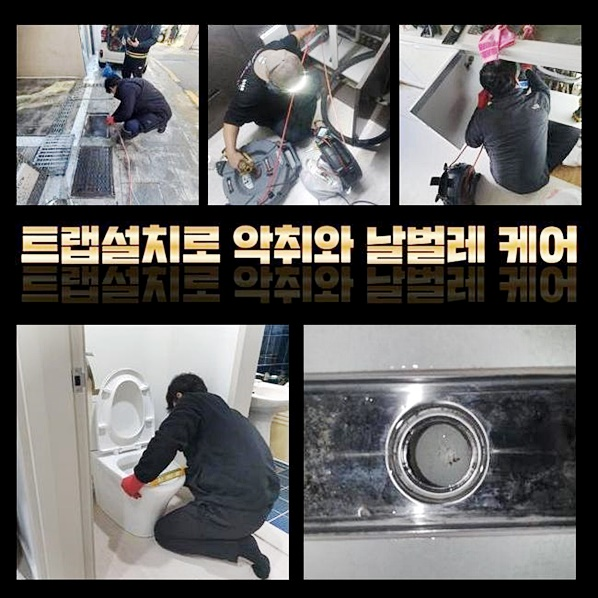
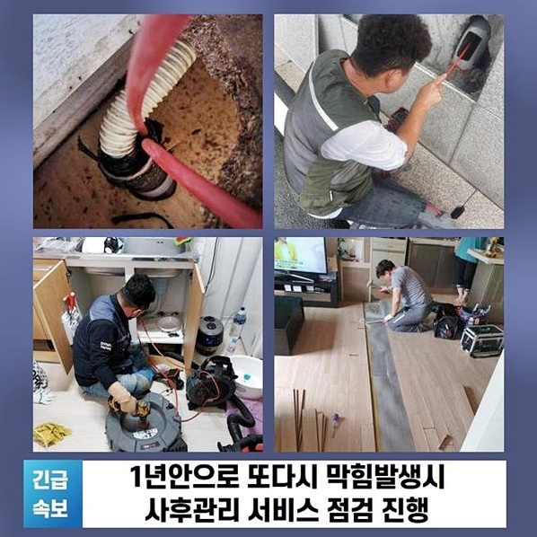
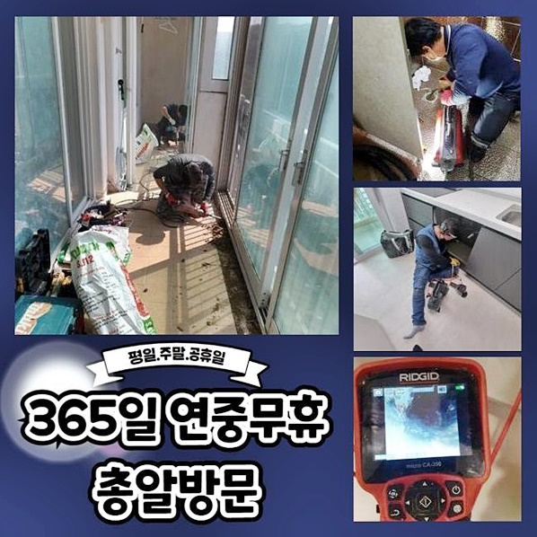
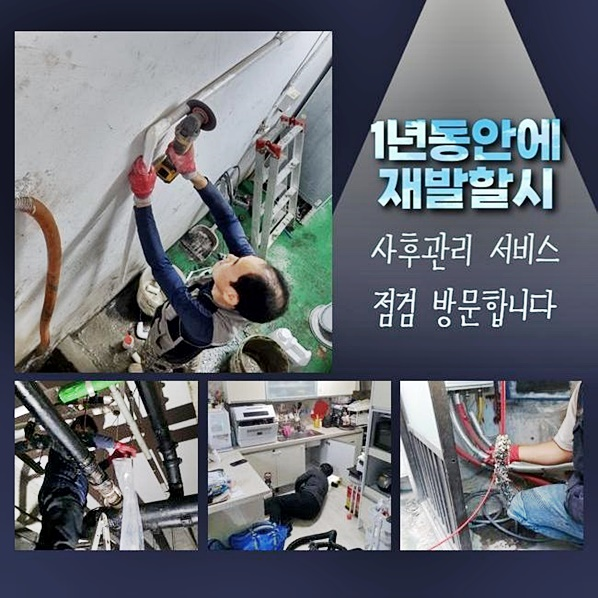
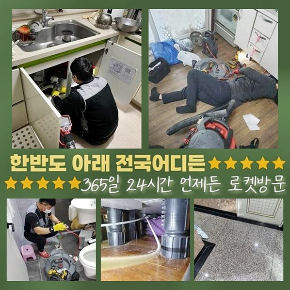
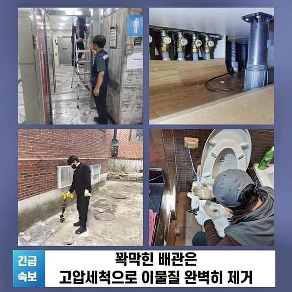
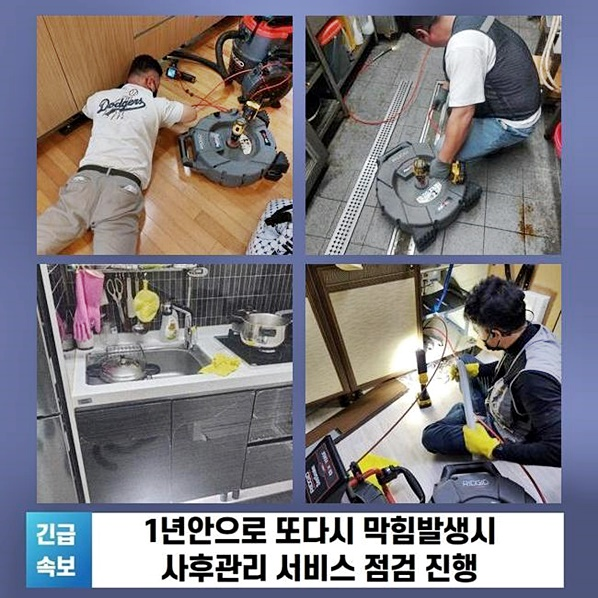

🏠 문원동변기막힘 원문동 하수구뚫는업체 배관막힘누수업체
용인시 처인구 배관막힘 전문 시공 후기

📋 작업 개요
- 위치: 용인시 처인구, 수원시 영통구, 화성시 동탄
- 서비스 유형: 배관막힘, 누수수리, 고압세척, 내시경점검
- 작업 일시:
- 업체명: 하수구수사대 (010-5615-2118)
🔍 문제 상황
문원동변기막힘 원문동 하수구뚫는업체 배관막힘누수업체
다수의 주거지나 상업지에서 하수구 불통이 일어나서 나름 셀프 용품들을 써봤지만 큰 변화를 이뤄내지 못해서 어떻게 해야하나 망설이시는 의뢰인분들이 실제로 많아요
어찌할 바를 모르겠다면 하수구를 오래 고쳐온 전문업체에게 지원을 요구하는 편이 하루라도 빠르게 시설물을 정상화하는데 보다 이로울 것입니다
비슷한 일을 겪어보지 못하셨던 분들은 공통적으로 어떤 업체에 맡길지 뜬구름 잡는 듯 모호해서 방향을 잃어버린 느낌이 드는 분도 계실거라 예측됩니다!
오늘의 현장 설명을 통해 유용한 데이터들을 알아보시면 좋겠습니다
오늘 소개하게 될 하수구 작업지는 통로가 봉쇄되어 하수를 틀어보면 폐기되지 않고 범람하는 사안과 마주하고 있는 것으로 짐작이 되었습니다
물이 정상 속도를 유지하며 배출되는 것이 아니고 이동이 중단된다면 대개 파이프 안쪽으로 잔여물이 막대하게 쌓이고 쌓여 부피가 늘어나서 빚어지는 경우입니다
막힘건 해소를 위해선 원인을 분석해주고 보완하는 방향이 재발되지 않게 오류를 타파할 수 있는 방법이죠
작업지에 얼른 이동하여 혹시나 노폐물들이 수습하기 좋은 위치인지 감별하려고 하수구의 진입로를 열고 들여다 보았어요
관로에 잔여물이 막대하게 끼어 있음을 알아차릴 수 있었네요
배관들이 모이는 기점에 생긴 장애로 추정했고 추가적인 판단을 내리고자 파이프 어디라도 접근하여 탐색하도록 지원하는 배관 관찰 장비를 들여보냅니다

🔎 원인 분석
💡 전문가 진단: 정밀 진단 장비를 사용하여 슬러지의 고착 여부를 판명하고 타격/세척 작업을 실시했습니다.
보기 힘든 깊이까지 전용 카메라 장치를 쭉쭉 내려봤더니 덩어리진 침전물 뭉치와 기름잔여물이 고여있었어요
이 정도라면 고군분투하면서 도움된다고 광고하는 셀프도구를 복합적으로 쓰더라도 소소한 경로 회복은 만들어져도 결국에는 수포로 돌아갈 것입니다
배관의 종류나 오염도에 따라 사용되는 기계와 도구도 편차가 있는데 물줄기를 통한 장치를 쓰는 게 베스트라고 보였어요
다수의 지점에서 정체하는 찌꺼기들을 동시에 없애주는 강력한 업무를 발휘해야 개선이 될 정도로 수준이 심화된 상태였죠
고압세척 장비를 작동시켜서 본작업에 진행하면 안에서 수분기도 튀어나오고 관로를 메우고 있던 물질들이 울컥 쏟아질테니 필터와 빨아당기는 석션을 대기시켰어요
배수로가 노후됐으면 잘 부서질 수 있으니 완만한 세기로 조정을 해두는 센스도 발휘해야 안전합니다
정규 청소업무가 부드럽게 마무리 단계에 접어들면 확실한 판단을 내리고자 카메라 장치로 재차 탐색하여 바로 완성됐나 품질을 체크해요
이물질을 다 정돈했다 싶어도 누락된 사항은 없는가 지속적으로 주시하므로 같은 증상이 유발되지 않아요
같은 날 예약이 된 현장의 수로의 복원을 만들어드리기 위해서 다른 구역에 있던 작업장으로 향했습니다
예고도 없이 불현듯 배수시스템이 불능이 되며 잇따라 역류 증세까지도 빚어지는 케이스였어요
보통의 거주 공간이라면 건물이 지어진 이래로 계속 흘러내려갔을 찌꺼기와 미세한 입자가 적체되어 불통되는 환경을 조성해요
작업 노선을 확립하기 위하여 부패된 오염물질이 내려가 있을 수로의 컨디션을 점검해요

🔧 작업 과정
특수한 내시경으로 살피니 바깥으로 빠지는 지점이 차단됐음을 즉각 판단하게 됐어요
배관의 본디 형상이 굽은 모습이었으며 자잘한 가지배관들과 이어져있는 연결 구간이 두드러지게 많았습니다
정확한 배관의 형태를 고려하지 못하고 일에 착수하면 작업 과정에서 마주하는 트러블에 대처하지 못해요
소홀히 점검하면 일만 커지고 성공 가능성도 저하되기에 초기 진단을 할 때 특히 집중을 하고 있어요
원인 판단을 내리고자 세부적으로 보면서 고심했고 끈적하다 못해 경화가 되어버린 슬러지를 최종 발견했습니다
강한 결속력으로 붙은 슬러지는 응축된 물줄기를 분사해서 세척을 이어간다면 처리가 되겠다 싶었죠
무계획으로 강하게만 세척하지 않고 제일 처음은 배수로 경로를 완전하게 습득한 뒤에 출입구로 진출을 해서 드러나는 물질들부터 소거해 나가야 해요
옥외로 향하는 라인에 인접한 지대가 바로 문제성 부위였던 만큼 목표물을 설정해두고 흡입해서 빼줬습니다
바깥으로 가는 관로는 설비에 대한 이해도를 소유하지 못하면 해결의 실마리를 찾지 못하는데 저희는 실력이 출중하고 허가 문제까지 담당하니 안심하셔도 좋을 거예요
미리 노선을 세운대로 배관부터 청소하고 깊이 들어간 찌꺼기의 제거를 위해 물줄기를 통한 장치를 세팅합니다
원리를 간략히 브리핑하자면 우수한 초고압 물로 묵은 찌꺼기와 때들을 없애주어 신속하게 하수 시스템의 완벽한 복원을 완수할 수 있게 됩니다
적용 범주를 할당하고 기다란 클리닝 호스를 연결해서 깊숙히 집어 넣고서 딱봐도 고집스럽게 붙어있던 기름 덩어리를 타격해서 하나둘씩 정리해 줬습니다
노즐을 쏘는 전후로도 카메라로 찍힌 스크린을 곧바로 알아보며 현황을 파악해 주었습니다
거듭 완벽하게 청소하고 깐깐하게 조사를 해보니 명쾌한 통로 형성이 이뤄졌음을 알게 됐습니다
청소 후의 사후 관리도 필수이니 바람직한 관리에 관해서도 설명해 드렸으며 막힘이 되풀이 될 경우에는 빠르게 손 봐드리겠노라 확신시켜 드렸어요
하수도의 회복을 도와달라 하신다면 서둘러서 문제 현장으로 찾아 뵙고 고쳐드리며 시공 후에도 나아진 면모를 접하지 못하신 경우라면 당연히 금전적인 요구는 없을 겁니다
하수구문제는 각양각색의 트러블에서부터 기인하며 현장마다 관로의 형상이 제각각이니 당연히 작업도 달라져요
저희 업체는 다양한 관리하고 대응해 왔고 상황에 맞는 대처 요령도 형성되어 있습니다
배관의 옵션은 당연하고 노후화된 수준 같은 사안을 모두 취합하여 가장 효과적인 수순을 밟습니다


✅ 작업 완료
이처럼 원인 분석을 정확히 밝히고난 후에 본 작업을 실시해야 2차적 오류가 생기는 걸 방어할 수 있습니다
배수가 원천차단되는 현상은 어제만 해도 멀쩡하다가 뜬금포로 벌어지는 골치아픈 사안입니다
하수가 서서히 내려가거나 냄새가 나는 등의 힌트들이 생길 것 입니다
일상생활 속 평소와 다른 느낌이 들 때 지체없이 연락해 주시면 의외로 정말 손쉽게 설비 본연의 힘을 되찾아 드립니다!
늦은 시간이라고 하더라도 문제점을 알려주신다면 준비를 철저히해서 가겠습니다




⚠️ 하수구 배관 막힘 예방 및 관리 가이드
- ✅ 머리카락, 비닐, 물티슈 등 물에 분해되지 않는 이물질은 절대 흘려보내지 마세요.
- ✅ 기름기 많은 식기는 설거지 전 키친타올로 먼저 기름때를 닦아내세요.
- ✅ 주기적으로 배수구에 뜨거운 물을 가득 부어주어 유지방 고착을 방지하세요.
- ✅ 작업 후 1년 이내 재발 시 무상 A/S 보증 서비스를 제공합니다.
💡 핵심 정리
- 확실한 장비 작업(내시경 점검 및 샤프트 스케일링)으로 원인을 뿌리 뽑습니다.
- 작업 후 1년 이내에 동일한 부위 재발 시 100% 무상 A/S 서비스를 보장합니다.
- 서울 · 경기 · 인천 전 지역에 24시간 언제든 긴급 출동할 수 있도록 항시 대기 중입니다.
❓ 자주 묻는 질문 (FAQ)
🚨 용인시 처인구 배관막힘 문제로 고민이신가요?
정확한 원인 진단과 확실한 시공으로 재발 없는 해결을 약속드립니다.
24시간 긴급 출동 | 서울 · 경기 · 인천 전지역 | 1년 내 재발 시 무상 A/S